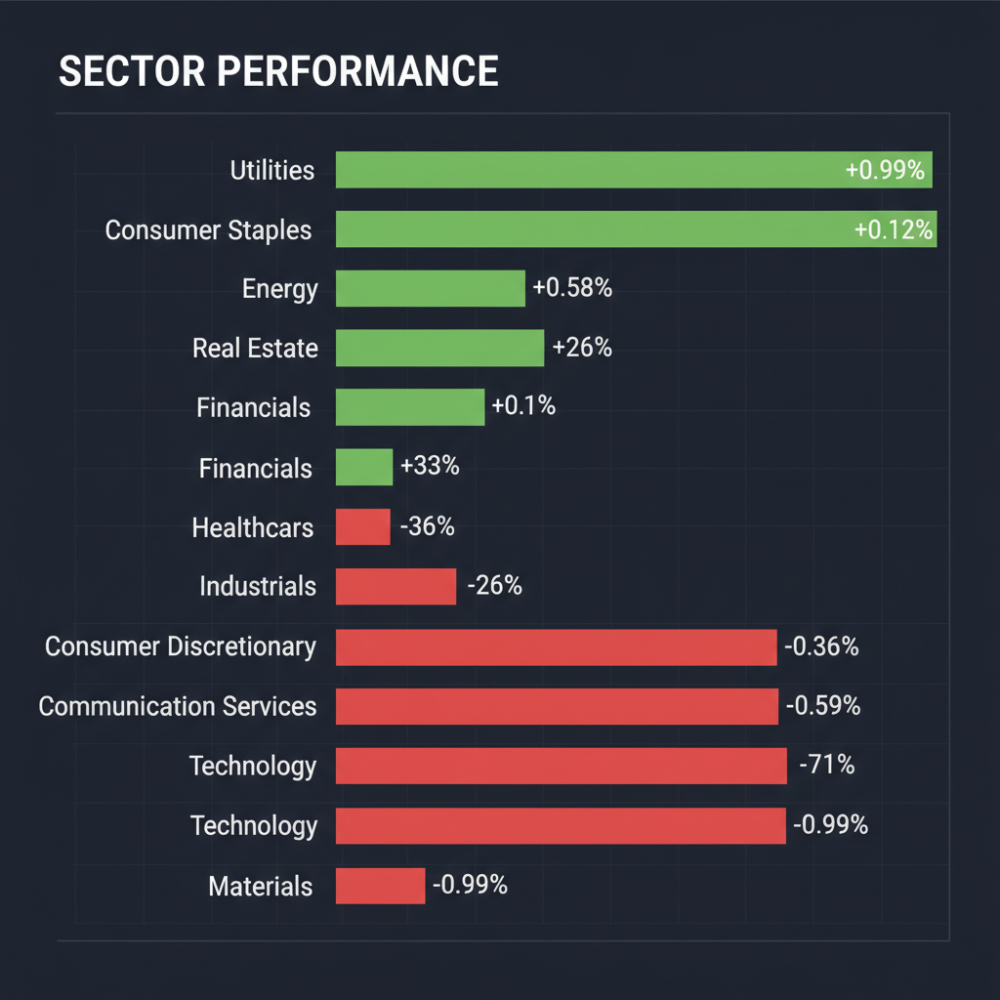
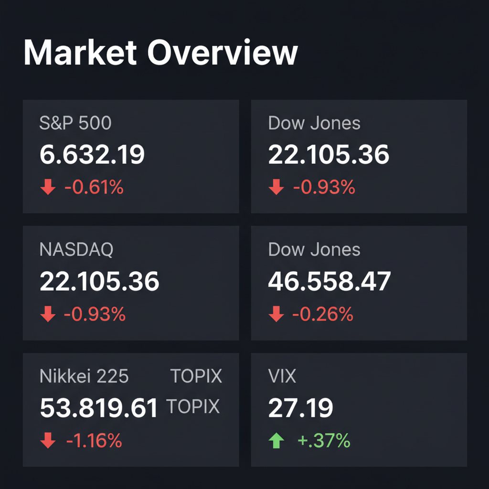

Daily Investment Report - 2026-03-15
Generated: 2026/3/15 8:12:51


本日の投資チームミーティングにおける各専門家の分析と市場データを統合し、最終的な投資レポートを以下の通りご報告いたします。
1. エグゼクティブサマリー
- 現在の市場は、AIブームの熱狂の裏でVIX指数が27台に高騰しており、極めて高いボラティリティと急落リスクを孕んだ警戒局面（リスクオフの初期段階）にあります。
- 資金は過熱した大型ハイテク株から、金利低下の恩恵を受ける公益事業やヘルスケアなどのディフェンシブセクターへ明確に逃避し始めています。
- 当面は新規の積極的なリスクテイクを控え、手元流動性（現金比率）を高めるとともに、強固な財務基盤と割安さを兼ね備えた「日米の優良中小型株」への選別投資が最も有効な戦略となります。
2. 注目銘柄リスト
大型ハイテク株への一極集中リスクを回避するため、市場に十分認知されていない隠れた成長株および優良中小型バリュー株を厳選して推奨します。
強気（買い推奨）
- Mueller Industries, Inc. (MLI) [時価総額: 約90億ドル]: 実質無借金かつ営業利益率20%を誇る米国の配管・インフラ用製品メーカー。AIデータセンターの冷却・電力インフラ更新という隠れたテーマ性を持ちながら、PER13倍台と極めて割安に放置されています。
- 信越ポリマー (7970) [時価総額: 約1,200億円]: 半導体ウエハ搬送容器の世界トップシェア級企業。AI半導体需要を支える「つるはし銘柄」でありながらPER11倍台と割安で、親会社（信越化学）によるTOBの思惑が安全マージンとして機能します。
- Crocs (CROX) [時価総額: 約80億ドル]: 高いブランド力で営業利益率25%超を維持するシューズメーカー。消費減速懸念でPER10倍程度まで売り込まれていますが、強力な自社株買いが下値を強固に支えています。
- 東テク (9916) [時価総額: 約800億円]: データセンターの省エネ化需要を確実に取り込んでいる空調計装の専門商社。実質無借金の鉄壁のバランスシートとROE15%超の資本効率を持ち、連続増配も魅力的です。
中立（様子見）
- QPS研究所 (5595) [時価総額: 約500億円]: 小型SAR衛星を用いた宇宙防衛ベンチャー。次世代AIの学習データ提供という巨大な潜在需要（テンバガー候補）を持ちますが、現在の高VIX環境下ではボラティリティが高すぎるため、テクニカルなブレイクアウトと出来高急増を確認するまで待機を推奨します。
弱気（警戒）
- SoundHound AI (SOUN) [時価総額: 約15億ドル]: エッジAI・音声認識のニッチトップ候補として成長期待は高いものの、PSRが20倍を超える赤字企業です。マクロショックや信用収縮が発生した際、真っ先に流動性が枯渇するバリュートラップの危険性が高いため、現時点でのエントリーは推奨しません。
- 米国の一般消費財・小売関連の低位株全般 [時価総額: 中小型中心]: 高金利の長期化とインフレによるコスト増を価格転嫁できず、過剰貯蓄の枯渇により消費者の息切れが直撃しているため、原則としてポートフォリオから外すべきです。
3. セクター推奨ランキング
市場の資金逃避（ローテーション）の動きとマクロ環境の変化を踏まえ、以下の順位で資金配分を推奨します。
ディフェンシブ性の高さに加え、金利低下による直接的な恩恵と「AIデータセンターによる莫大な電力需要」という強力なグローステーマを併せ持っており、現局面で最もリスク・リワードに優れています。
- 2位：ヘルスケア（Healthcare / XLV）
景気後退リスクに強い防御力を発揮すると同時に、肥満症治療薬（GLP-1）やAI創薬といった独立したメガトレンドを有しており、安定した資金流入が期待できます。
- 3位：生活必需品（Consumer Staples / XLP）
消費者の財布の紐が固くなる「K字型経済」の顕在化において、価格決定力を維持しやすく、高VIX環境下での資金の逃避先として機能します。
- 4位（アンダーウェイト推奨）：情報技術（Technology / XLK）
バリュエーションが極限まで高まっており、AI収益化の遅れや次期ガイダンスのわずかな未達でフラッシュ・クラッシュ（急落）を引き起こすリスクが高いため、比率を引き下げるべきです。
- 5位（アンダーウェイト推奨）：一般消費財（Consumer Discretionary / XLY）
低・中所得者層のクレジットカード延滞率の上昇など、実体経済の減速の影響を最も強く受けるため、投資対象から除外することを推奨します。
4. 今週の注目イベント
市場のボラティリティをさらに増幅させる可能性があるため、以下の動向には最大限の警戒が必要です。
- 次期AI・ハイテク企業の決算発表・ガイダンス提示: 「AIへの莫大な設備投資」が「実際の収益（EPS）」にどう結びついているか、経営陣のトーンの変化を確認。
- 米国のインフレ関連指標（CPI / PCEデフレーター）の発表: FRBの9月利下げシナリオを裏付けるか、あるいはインフレ再燃による「利下げ後退」を示すかの試金石。
- 日銀の金融政策決定会合と総裁会見: 国債買入れ減額（QT）の規模と追加利上げのタイミング、およびそれに伴う為替介入・円高方向への反応。
5. リスク要因
- フラッシュ・クラッシュ（連鎖的急落）リスク: VIXが27台と非常に高く、極端な集中相場となっているため、一部の超大型株の調整がインデックス全体の機械的な売りを誘発する危険性があります。
- 円キャリートレードの巻き戻し: 日米金利差の縮小観測により急激な円高が進行した場合、これまで日本市場を牽引してきた輸出関連の大型株が暴落し、グローバルな金融ショックの引き金となるリスクがあります。
- 商業用不動産（CRE）ローンの焦げ付き: 米国のオフィス向け不動産価格の下落が地銀のバランスシートを直撃し、信用収縮が中小型株の資金繰りを悪化させるリスクが水面下で高まっています。
6. アクションアイテム
投資家の皆様は、今日ただちに以下の防衛的かつ戦略的なアクションを実行してください。
- 現金比率の大幅引き上げ: 新規の積極的な買い付け（特に大型ハイテク株や高PERの未利益グロース株）を直ちに停止し、ポートフォリオ内の現金または短期米国債の比率を最低でも30〜40%に引き上げてください。
- ストップロス（損切り）の厳格化: 保有中のすべての株式ポジションに対し、直近の押し安値や50日移動平均線を基準とした厳格なストップロス注文を設定し、急落時の致命傷を回避してください。
- ディフェンシブ・ローテーションの実行: 利益が出ている大型ハイテク株や一般消費財セクターを利益確定（一部売却）し、その資金を公益事業、ヘルスケア、または「実質無借金でフリーキャッシュフローが豊富な中小型バリュー株」へ振り向けてください。
- テールリスク・ヘッジの検討: オプション取引が可能な投資家は、S&P 500やNASDAQに対するプット・スプレッドを構築するか、ポートフォリオの5〜10%を金（ゴールド）などの非相関資産に割り当てて防衛線を張ってください。